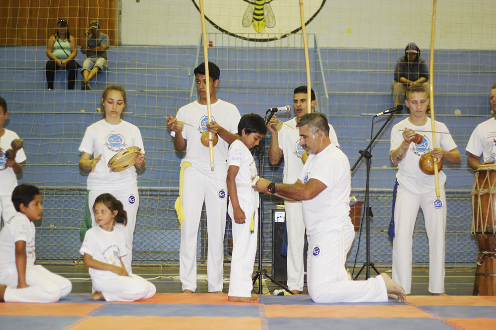
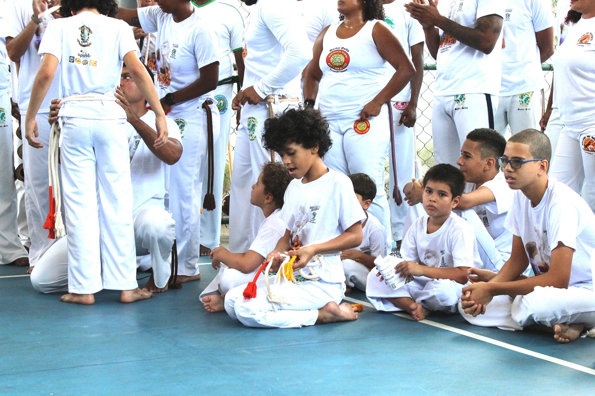
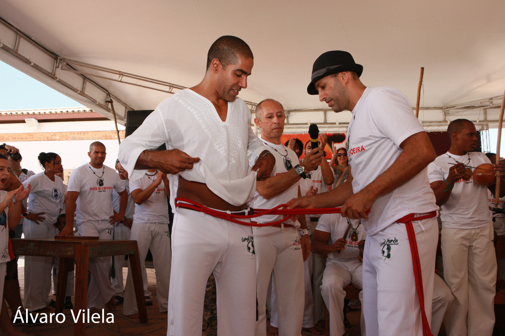
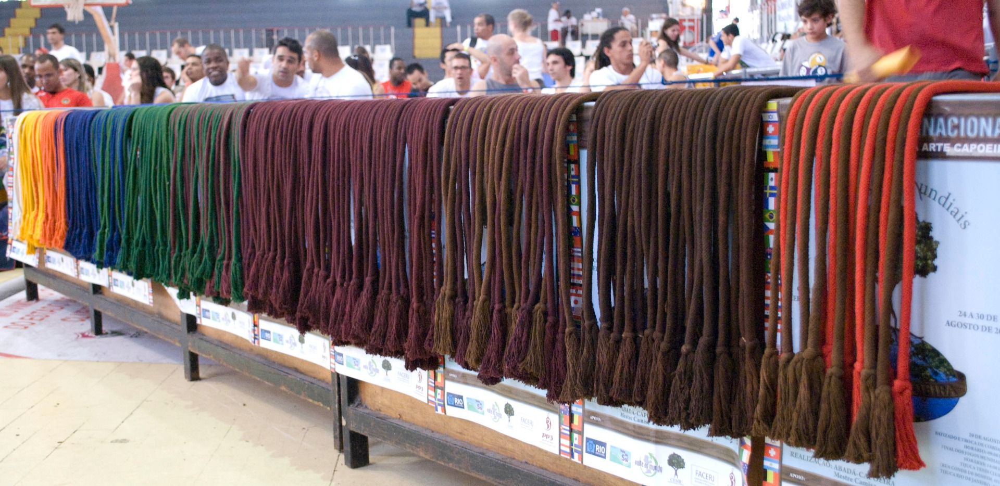
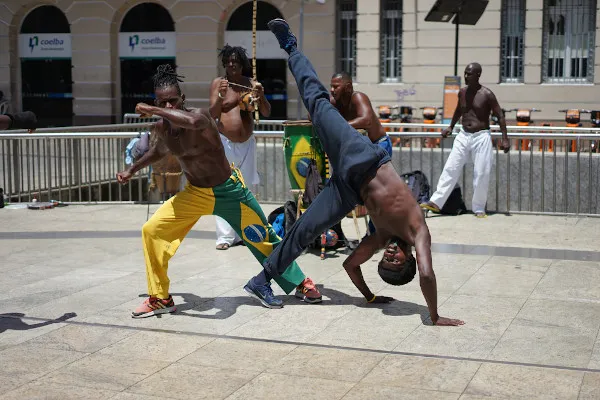
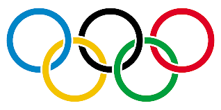
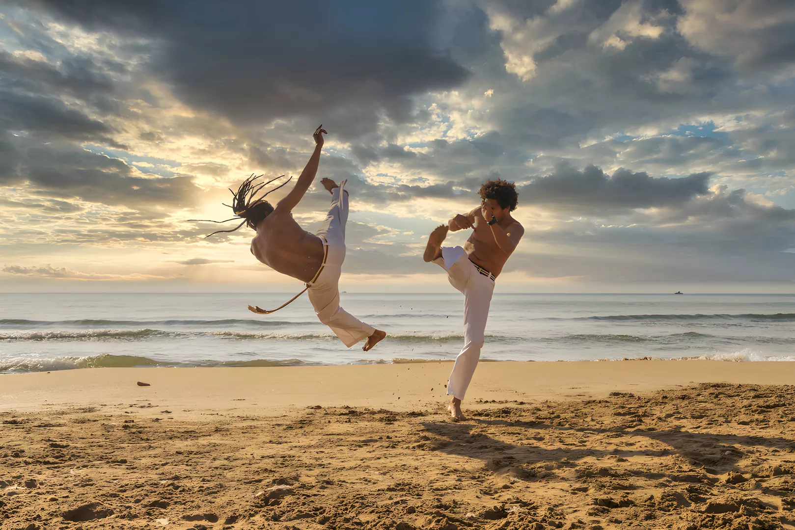

No entanto, nos dias de hoje são muitos os tipos de graduação adoptados pelos grupos de capoeira. Algumas graduações são regularizadas através de federações estaduais, ou pela própria Federação Brasileira, existindo ainda as confederações, associações, ligas, e grupos independentes, que adoptam sistemas diversos, baseados em diferentes cores.
A nova visão da capoeira enquanto desporto criou também a necessidade de avaliar a capacidade entre dois atletas pois, para a realização de um campeonato, para além do peso, deve-se ter em consideração o grau de conhecimento do atleta, sendo este definido pela sua graduação.
O estilo Senna ou capoeira estilizada, criada pelo conhecido Mestre Senavox, ex-aluno de Mestre Bimba, com base nas artes marciais orientais, escolheu o cordão de cores diferentes, como forma de distinguir as categorias de atletas, sendo esta forma adotada por quase todos os grupos actuais. O que na verdade diferencia as cordas ou cordéis, são as cores. Alguns grupos utilizam as cores referentes aos Orixás:


Existem ainda as cordas “quebradas” (intermédias), que possuem metade de uma cor, representando a graduação anterior, e a outra metade, representando a posterior.
Outros grupos adoptam o sistema baseado nas cores da bandeira brasileira, criado pela Federação Brasileira de Capoeira, tendo como sequência as cordas de cor:
Adoptando a tradição dos antigos capoeiristas, a Regional utilizava os lenços feitos de seda. Durante a sua passagem pela academia de Mestre Bimba, o aluno só recebia a sua graduação, aquando da formatura, tendo o direito de usar um lenço azul. Depois de passado pelo famoso curso de especialização, recebia o lenço vermelho, já o lenço verde simbolizava a sua capacidade como tocador de berimbau, mantendo o grau de instrutor, o lenço era azul, quando “contramestre”, o lenço amarelo fazia parte da sua indumentária, e finalmente, quando elevado a categoria de Mestre, tinha o direito de utilizar um lenço branco, com o símbolo de São Salomão, bordado em verde num dos cantos.

Antigamente, o reconhecimento enquanto Mestre era dado pela própria comunidade, fazendo com que seu valor fosse reconhecido pelo seu tempo, trabalho e respeito adquirido perante a comunidade.
Desta forma, a conhecida Capoeira Angola não costuma utilizar o sistema de cordas ou cordel, nem tão pouco os lenços, como referência hierárquica. Existe sim, uma trajectória de seus praticantes, que passa de aluno para Contra-Mestre, formando-se em seguida Mestre, podendo ainda, em outros grupos, existir a definição de Aluno, Treinel, Contra-Mestre e Mestre. No entanto, vale a pena salientar que, apesar de parecer curto este trajecto, cada uma destas mudanças equivale a um período muito longo de tempo e trabalho, o que leva toda uma vida de aprendizagem.

Como dizem os capoeiristas, a capoeira “deu volta ao mundo” conquistando adeptos em todos cantos, atingindo seu auge com reconhecimento como patrimônio cultural imaterial da humanidade pela Organização das Nações Unidas para Educação, Ciência e Cultura – UNESCO, no ano de 2014. Todavia, existe um espaço que a capoeira ainda não conquistou, os Jogos Olímpicos.
Então, a capoeira pode ser uma modalidade olímpica? Segundo as normas do Comitê Olímpico Internacional, um esporte para ser considerado olímpico deve ser praticado em 75 países para o masculino, e 40 países para o feminino, estando em no mínimo três continentes. Itens básicos que a capoeira possui com sobra, sendo praticada em mais de 150 países por pessoas presentes nos cinco continentes.
Além desses, o esporte precisa ter atratividade dos veículos de comunicação, ter relação com o país sede (oportunidade não conquistada em 2016), acrescentar valor para população, ter apelo com a juventude, igualdade de gênero, ter baixos custos operacionais e regido por uma federação internacional que seja o núcleo da modalidade. Contudo, mesmo cumprindo esses requisitos existe a premissa de que um esporte só pode entrar no programa dos Jogos Olímpicos caso outro saia.

Então, o que pode ser feito? Um recurso seria se organizar melhor tornando-se um esporte mais atrativo e firmando-se como uma modalidade competitiva. Neste sentido, houve uma tentativa da Federação Internacional e Capoeira – FICA fundada em 1999 com sede em Atibaia no Estado de SP. A FICA integrava 38 federações nacionais, realizou três fóruns mundiais para discutir parâmetros técnicos, culturais, administrativos, desportivos e educacionais, conseguiu estabelecer um dia mundial para capoeira (05 de julho), mas não está mais em atividade.

A capoeira ainda esbarra em seus próprios dilemas. Mesmo com ações como essa da FICA, ainda não é possível encontrar uniformidade na nomenclatura de golpes e movimentos; nos estilos e formas de jogo; nos toques de berimbau seguidos; na simples maneira de organizar os instrumentos na roda. As graduações são com cordas, cordéis, cordões de diferentes tipos, tamanhos e cores, sem falarmos nos termos usados para classificar os títulos obtidos. As escolas defendem suas próprias bandeiras, realizam competições e festivais internos, há tensões e rivalidades comuns em qualquer luta, contudo, tal conjectura fortalece a individualidade e enfraquece o coletivo.
Não é uma crítica a comunidade da capoeira, mas esta composição foi uma maneira que encontrada para o desenvolvimento da capoeira que aos poucos foi se organizando com escolas, grupos, constituindo entendimentos, normas, tradições diferentes, surgindo mestres, novos discípulos, fazendo com que se tornasse um fenômeno sociocultural que a fizeram chegar aonde está.